Unreal Integration 2.02
- Welcome to FMOD for Unreal
- User Guide
- Installing the integration
- Setting up your project
- Making sounds
- Listener
- Working with Banks
- Sequencer Integration
- Occlusion
- Reverb Zones
- Callbacks
- Localization
- Updating/Upgrading the Integration
- Compiling the plugin (Optional)
- Programming Support
- Programmer Sounds
- Deployment
- Source Control
- Commandlet
- Settings
- Plugins
- Niagara Integration
- API Reference
- Blueprint Reference
- Platform Specifics
- Troubleshooting
- AudioLink
- Glossary
2. User Guide
FMOD For Unreal is a plugin that allows you to use the FMOD APIs and projects from the FMOD Studio authoring tool in your Unreal game.
Normally you will just need one copy of the integration. If you develop for multiple platforms at once, you can copy multiple integrations over the top of each other.
2.1 Installing the integration
The FMOD for Unreal integration is delivered as a set of plugins. You must install the integration plugin for the host platform which you are developing on, and may need to install additional integration plugins for other platforms which you are targeting.
FMOD for Unreal can be installed in either the project or engine directory.
2.1.1 Host Platform Integration
The supported host platforms are Windows, Mac and Linux.
The integration packages for these platforms should be extracted to MyGame\Plugins\ (replace MyGame with the root directory of your Unreal project or Unreal Engine and create the Plugins folder if it does not already exist). After extracting the base package into MyGame\Plugins you should have this structure:
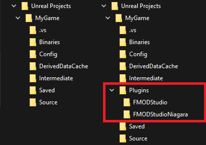
2.1.2 Additional Platforms
After installing the integration plugin for your host platform you may need to install additional plugins for other platforms which you are targeting.
Windows Desktop
Install the Windows plugin following the instructions for Host Platform Integration. Files which are duplicated between the plugins can be overwritten safely.
Universal Windows Platform
UWP support is included in the Windows plugin package. Install the plugin following the instructions for Host Platform Integration. Files which are duplicated between the plugins can be overwritten safely.
Linux
Install the Linux plugin following the instructions for Host Platform Integration. Files which are duplicated between the plugins can be overwritten safely. Additional setup is required for this platform, please see the Platform Specifics | Linux section for more information.
MacOS
Install the Mac plugin following the instructions for Host Platform Integration. Files which are duplicated between the plugins can be overwritten safely. Additional setup is required for this platform, please see the Platform Specifics | macOS section for more information.
iOS
iOS support is included in the Mac plugin package. Install the plugin following the instructions for Host Platform Integration. Files which are duplicated between the plugins can be overwritten safely. Additional setup is required for this platform, please see the Platform Specifics | iOS section for more information.
tvOS
tvOS support is included in the Mac plugin package. Install the plugin following the instructions for Host Platform Integration. Files which are duplicated between the plugins can be overwritten safely. Additional setup is required for this platform, please see the Platform Specifics | tvOS section for more information.
Android
Android support is included in the Windows plugin package. Install the plugin following the instructions for Host Platform Integration. Files which are duplicated between the plugins can be overwritten safely. Additional setup is required for this platform, please see the Platform Specifics | Android section for more information.
PS4
Install the PS4 plugin following the instructions for Platform Specific Integrations. Additional setup is required for this platform, please see the Platform Specifics | PS4 section for more information.
PS5
Install the PS5 plugin following the instructions for Platform Specific Integrations. Additional setup is required for this platform, please see the Platform Specifics | PS5 section for more information.
XBox One
Install the Xbox One plugin following the instructions for Platform Specific Integrations. Additional setup is required for this platform, please see the Platform Specifics | Xbox One section for more information.
XBox Series X|S
Install the XBox Series X|S plugin following the instructions for Platform Specific Integrations. Additional setup is required for this platform, please see the Platform Specifics | Xbos Series X|S section for more information.
Switch
Install the Switch plugin following the instructions for Platform Specific Integrations. Additional setup is required for this platform, please see the Platform Specifics | Switch section for more information.
2.1.3 Platform Specific Integrations
When adding additional platform specific integration packages you should extract them directly into the project root directory. After extracting them you should have this kind of structure:
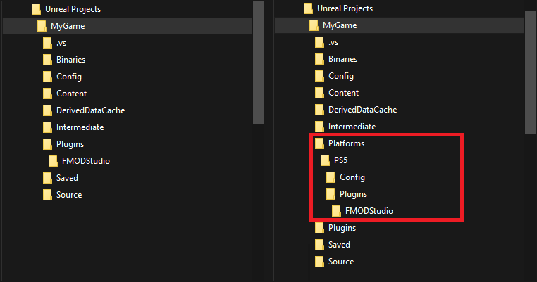
Additional platform specific installation instructions may be included in the Platform Specifics section. Most platforms will require additional config files. Refer to the Platform Specifics section for more information. Otherwise see the TroubleShooting section.
2.2 Setting up your project
After adding The FMOD UE4 integration to your project or engine, you will need to restart the Unreal Editor before you can access it.
There are settings in both Unreal and FMOD Studio that need to be configured to link the two together.
In order to access your FMOD Studio content, the plugin will need to locate the .bank files that FMOD Studio produces.
By default the plugin looks in the '{MyProject}/Content/FMOD' directory for the platform folders containing banks.
You can either manually copy them or use the 'Validate FMOD' option from the plugin in Unreal to connect to FMODStudio and build the banks directly into the project.
2.2.1 Manually
From your FMOD Studio Project, select "Edit > Preferences..." ("FMOD Studio > Preferences..." on Mac) and select the build tab. Set your built banks output directory to a directory called "FMOD" under your game's content path.
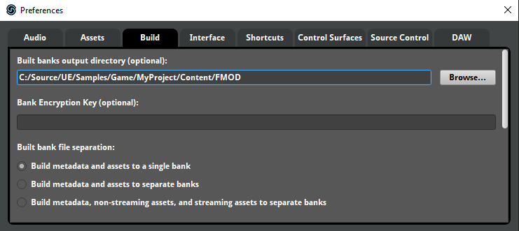
Now select "File > Build". This will build bank files for events that have been assigned to banks. You should do this whenever project data has been modified.
2.2.2 Validate FMOD
You can run the "Help > Validate FMOD" option in the Unreal Help menu at any time, this can help with making sure the plugin settings are up to date and prepared for deployment.
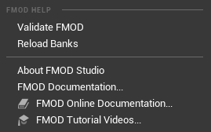
If an issue is detected in the settings then you will also see this popup that can be used to start the 'Validate' process.
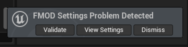
If you have the FMOD Studio Project open 'Validate' will allow the plugin to connect to it and gather more information to add the the plugin settings. It finds and fixes common issues, and can automatically link your FMOD Studio project for you!
Running validate will do the following:
- Connecting to your FMODStudio project. (requires FMODStudio running)
- Checking that the versions of the code, the libs and FMODStudio all match. (requires connection to FMODStudio)
- Your FMOD Studio bank export path is correct. (requires connection to FMODStudio)
- Linking to your FMODStudio banks.
- Studio events have been added to the banks.
- Importing locale options from your Studio project. (requires connection to FMODStudio)
- Adding plugins to the FMOD settings.
- Adding FMOD files and uassets to the packaging settings.
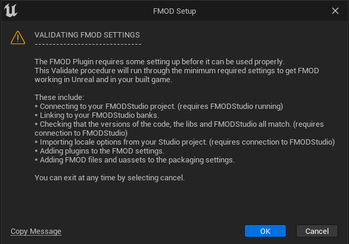
2.2.3 Confirm the Banks are Built and Loaded
Now, open Unreal and look at the content browser. The plug-in defaults to looking in '{MyProject}/Content/FMOD' directory for banks, so if you have exported banks there, assets should appear in the content window automatically. These represent items in your Studio project which update automatically when banks are built.
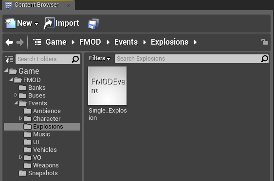
For more information about banks, see the Banks page.
2.2.4 Naming Considerations
FMOD For Unreal will create Unreal assets to represent the objects in your FMOD Studio project. These are the assets you see in the content browser. The names of the assets are based on the names you use in FMOD Studio, but there are some limitations imposed by Unreal which may not apply in FMOD Studio:
- Unreal asset names may not contain spaces, tabs, or any of the following characters:
"',/.:|&!~@#(){}[]=;^%$` - Unreal asset folder names may not contain spaces, tabs, or any of the following characters:
"',\\|/&!~@#(){}[]=;^%$`
If you use any of these illegal characters in your FMOD Studio folder names or object names then the integration will generate a name for you by replacing the illegal characters. The generated names are not guaranteed to be unique and if a generated name duplicates another asset's name then one of the assets will be hidden by the other and the hidden asset will be inaccessible.
To avoid any unexpected behavior or confusion we recommend that FMOD Studio folder names and object names are named in line with the limitations imposed by Unreal.
2.2.5 Platform specific setup
Refer to Platform Specifics for details of additional platform dependent setup.
2.3 Making sounds
FMOD For Unreal provides multiple ways in which Studio events can be played.
2.3.1 Ambient Sounds
The simplest way to play a looping ambience, is to drag and drop an event from the content browser into a scene viewport.
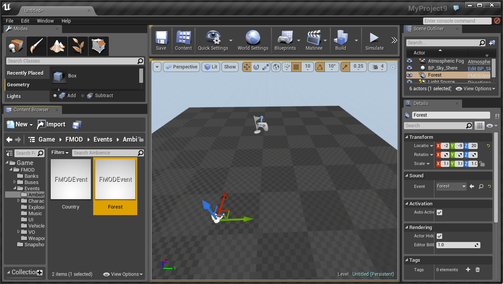
For example, try dragging the Game/FMOD/Events/Ambience/Forest event into a level. This will create an FMODAmbientSound. Hit Play to begin playing in editor, and you should immediately hear the Forest ambience.
Make sure you drag an event into the main viewport. Dragging a bank into main viewport won't do anything.
2.3.2 Playing Sounds From Blueprint
Another easy way to trigger a sound is via blueprint. You can use the play event at location function to quickly trigger any given event.
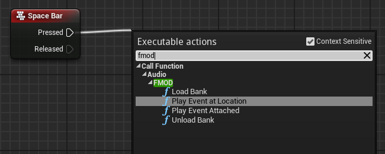
In the example shown below, the Single_Explosion event is triggered at the location of the camera, every time the spacebar is pressed.
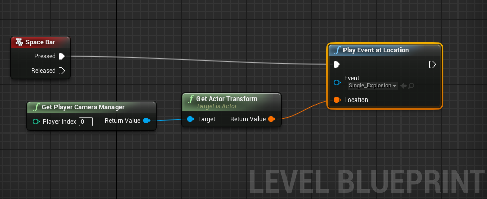
2.3.3 Other avenues
Keep in mind that more advanced control is also available from blueprints. There are graph functions for playing and stopping events, setting parameters, and loading or unloading banks. You can also add FMODAudioComponents to blueprints, allowing you attach audio directly to an object.
2.4 Listener
FMOD can support up to 8 listeners in game. The listeners will follow the Unreal listeners which by default is attached to the camera, but we can move them by moving the Unreal listeners.
This is particularly useful for Third-Person and Top-Down style games.
2.4.1 Example
Using SetAudioListenerOverride allows you either attach the listener to a component or set the transform and rotation manually.
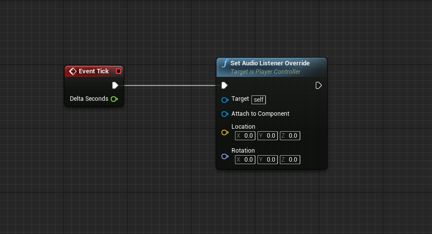
2.5 Working with Banks
Content created in FMOD Studio is exported into bank files. These bank files can then be loaded within Unreal using FMOD For Unreal. Banks can contain multiple events, which will implicitly pull in any audio assets they depend on.
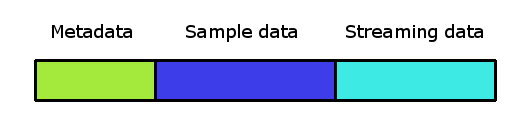
Loading a bank will load all metadata, which contains information about all the events, parameters, and other data needed for all events assigned to that bank.
2.5.1 Studio Bank Output Directory
It is highly recommended that banks are exported to the Content directory of your project (see Deployment for more information). This can set via the built banks output directory setting in the FMOD Studio, which can be found in "Edit > Preferences..." on Windows (or "FMOD Studio > Preferences..." on Mac), under the Build tab.
When using the Unreal editor, as long as you match the FMOD Studio built banks output directory to the bank output directory specified in the Unreal project settings ("Edit > Project Settings > FMOD Studio"), the integration will find and load all bank content automatically.

2.5.2 Assigning Events to Banks
Before a new FMOD Studio event can be used in Unreal, it must first be assigned and built to a bank which can be loaded by Unreal. This can be done within FMOD Studio via the context menu of an event, or by dragging and dropping an event onto a bank.
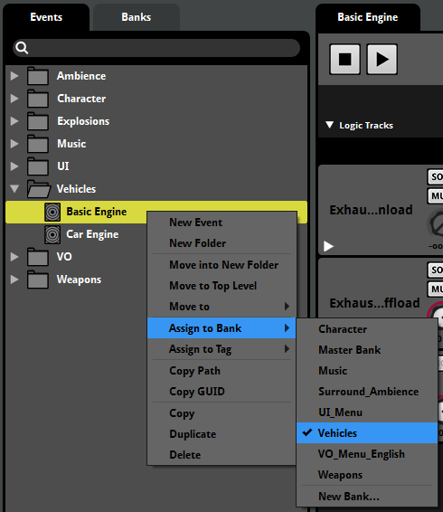
Events are typically assigned to the same bank when they should be loaded and unloaded at the same time. For example, you might put all the events for the Goblin enemy within the Goblin bank.
Once you have assigned your events to a bank, you should rebuild your banks. This is done via the "File > Build..." menu item.
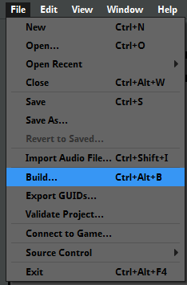
2.5.3 Loading Banks within Unreal
The banks built in FMOD Studio are loaded in editor by the plugin, so that you can browse Events, Buses, Snapshots, etc. from the Studio Project. You are able to customize the way the banks are loaded in game, to suit your requirement, otherwise by default all the banks will be loaded at initialization.
In Editor
Within the Unreal editor, banks are loaded automatically as soon they are built. When correctly configured, any data within banks (e.g. events, mixer strips) should appear within the content browser under Game/FMOD by default.
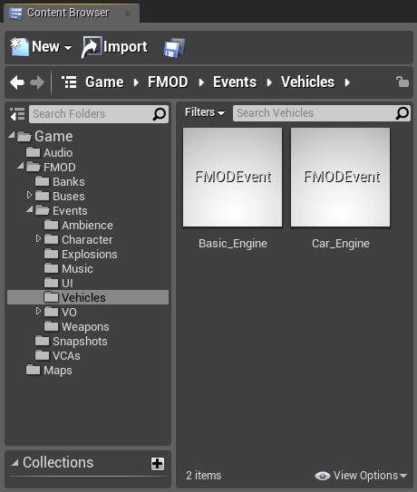
In Game
FMOD For Unreal will load all banks by default. If you would like to manually control bank loading, this behavior can be disabled via the load all banks checkbox within the FMOD Studio settings dialog ("Edit > Project Settings > FMOD Studio").
If using split banks, make sure to load the assets bank first and using load sample data on the metadata bank.
Banks can then manually be loaded and unloaded using the Load Bank and Unload Bank blueprint functions.
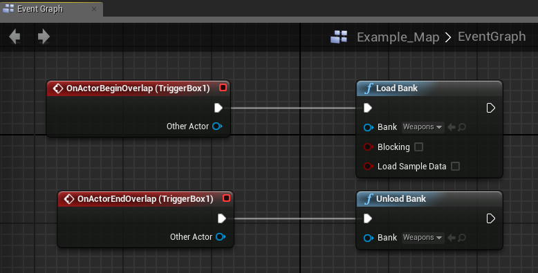
The Master Bank does not need to be loaded manually. It is automatically loaded at startup.
2.6 Sequencer Integration
FMOD is integrated into Unreal Engine 4's Sequencer.
2.6.1 Adding FMOD Events to a Level Sequence
Events can be added in one of two ways:
-
Ambient sounds already placed in the level may be possessed by the level sequence. Add ambient sound actors to the sequence by clicking the button in the Sequencer editor and choosing the ambient sound actor to add. Alternatively the actor can be dragged from the World Outliner into the Sequencer editor.
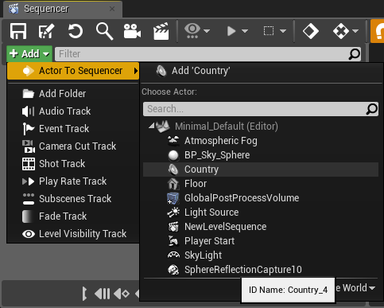
Possessed events will retain any state set by the level sequence when playback is complete. The level sequence's Restore State setting can be enabled to restore the state of possessed events (and any other actors possessed by the level sequence). -
New events may be spawned from Sequencer. Sequencer can spawn FMOD events during playback. To create a spawned event drag an FMOD event from the Content Browser into the Sequencer editor.
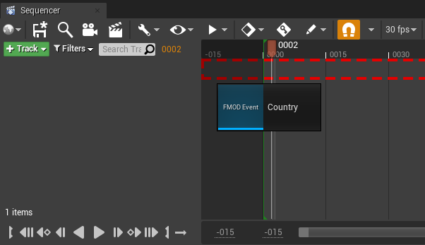
Spawned events will not automatically play when spawned.
2.6.2 Adding Event Sub-Tracks
Once added to a sequence additional sub-tracks are required to do anything interesting. Sub-tracks can be added by clicking the button in the object's track. FMOD adds two new sub-track types for events in addition to the standard Sequencer sub-tracks.
- Event control tracks allow events to be played and stopped.
- Parameter tracks allow event parameters to be animated using Sequencer's keyframe animation tools.
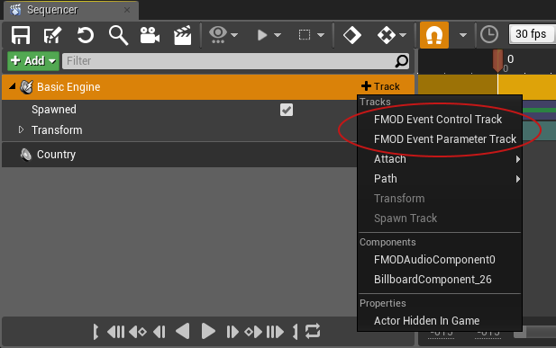
2.6.3 Event Control Sub-Track
Keyframes on the event control sub-track can be used to Play or Stop the event.
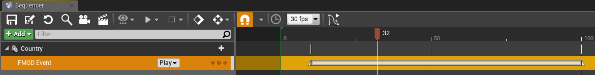
2.6.4 Parameter Track
An FMOD Event Parameter Track allows additional sub-tracks to be added for each parameter in the targeted FMOD event. Additional sub-tracks can be added by clicking the button in the FMOD Event Parameter Track.
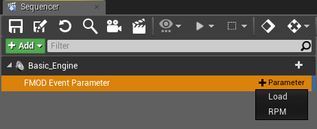
Keyframes may be added to the parameter sub-tracks to control the value of the event parameter during playback of the level sequence. The Unreal Engine 4 curve editor may be used to create rich curves for FMOD event parameters.
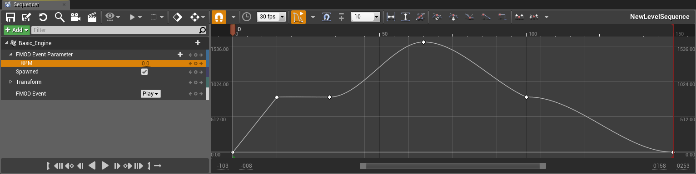
FMOD For Unreal is unable to validate the range of parameter values set by Sequencer. The FMOD Engine will clamp any parameter value outside the range specified in FMOD Studio.
2.7 Occlusion
FMOD For Unreal supports the use of ray casts, to drive a specified parameter, for per instance occlusion of sounds.
2.7.1 Occlusion Settings
To enable occlusion ray casts for FMOD in your Unreal project, set the name of the parameter that will be used for occlusion in Studio.

If an Event contains this parameter, the integration will set the parameter value any time the occlusion value changes.
You can disable occlusion, per instance, and adjust the Trace Channel in the Component Details window.
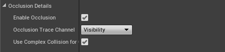
2.8 Reverb Zones
FMOD For Unreal supports the use of the standard Unreal audio volumes to trigger Studio's advanced snapshot system.
2.8.1 Snapshot Reverb Effects
The workflow to use reverb zones is to set up snapshots in FMOD Studio. Snapshots can modify global reverb effects, change any bus volume, and modify any DSP value. To help trigger snapshots for reverb effects, the integration exports all snapshots as reverb effects in the FMOD/Reverbs folder.
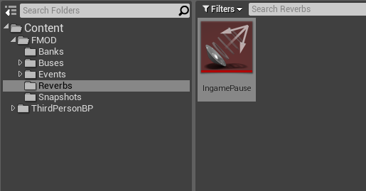
These reverb effects can be dragged into audio volume Reverb Settings panel to be triggered when the audio listener enters the audio volume. It uses the same logic as the inbuilt Unreal audio system to determine which audio volume should be enabled, based on the priority of all the audio volumes the audio listener is within. The Snapshot priority, which is used to resolve conflicting property values when mutliple snapshots are active, is unrelated to audio volume priority and not a factor in determining which audio volume will be enabled. In the case of nested audio volumes you must set distinct priorities because audio volumes with the same priority may not become enabled.
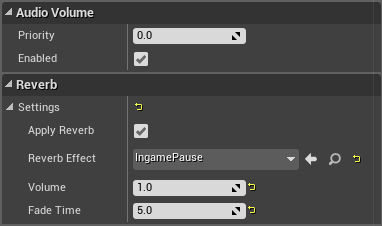
By default, snapshots apply instantly. To have a snapshot fade in, one of two things can be done. The first is by adding an AHDSR modulation to the intensity dial. The second way is to expose the intensity as a parameter, which allows it to be driven from the integration.
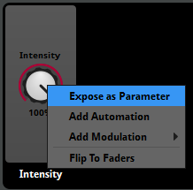
If the snapshot has its intensity exposed as a parameter, then the integration will ramp in the intensity over time based on the audio volume's Volume and Fade Time settings. If the snapshot does not expose its intensity as a parameter, then these values will not do anything.
2.8.2 Ambient Zone Settings
Another feature of the Unreal audio system is the ability to have an ambient effect applied to selected instances, based on both the listener position and the emitter position. Unlike the global reverb effects, this is something which is applied per instance.
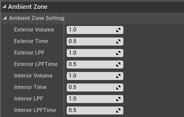
Only some sounds should be affected by the ambient settings. To enable the ambient effect your Events will need two parameters, one for volume and one for LPF.
You will need to add these parameter names to the integration settings.
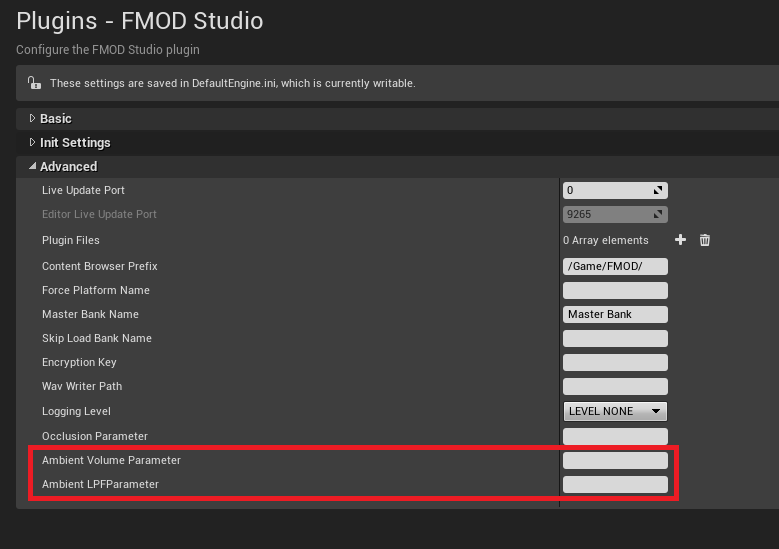
If an Event contains these parameters, the integration will set the parameter value any time the ambient values change.
Only FMOD audio components are affected by ambient zones. The simpler PlayEventAtLocation blueprint function to spawn one-shots does not apply ambient effects.
2.9 Callbacks
You can hook up event callbacks using blueprints. FMOD Audio component callbacks are only triggered if the enable callback option is ticked. This is because each component that triggers callbacks can incur a small CPU overhead, so it has to be turned on explicitly for the components you want to use.
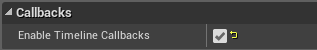
Once enabled, then tempo beat callbacks and timeline callbacks can be added in blueprints. One way is via the Assign On Timeline Beat and Assign On Timeline Marker blueprint actions. For FMOD audio components used in blueprint actors, you can add events from the details window instead.
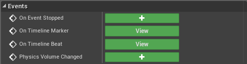
You can trigger various actions to occur on the beat or when a timeline hits a named marker. The event contains the same fields as FMOD_STUDIO_TIMELINE_BEAT_PROPERTIES and FMOD_STUDIO_TIMELINE_MARKER_PROPERTIES.
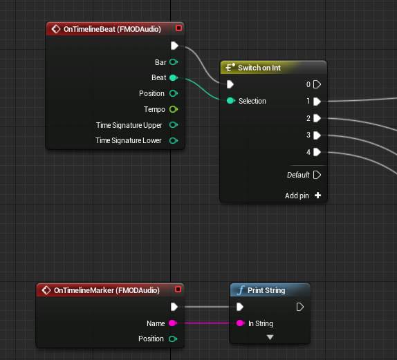
2.10 Localization
Localized audio tables are a special kind of audio table with features that facilitate localization. We recommend using localized audio tables if your game supports multiple spoken languages, or if you intend to add support for additional languages in a future patch.
2.10.1 Setting up Audio Tables
Audio Tables are lists of audio files stored outside your FMOD Studio project's asset folder. You can use audio tables to control localized sounds. See the Dialogue and Localization section of the FMOD Studio Docs on how to set up an audio table in your project.
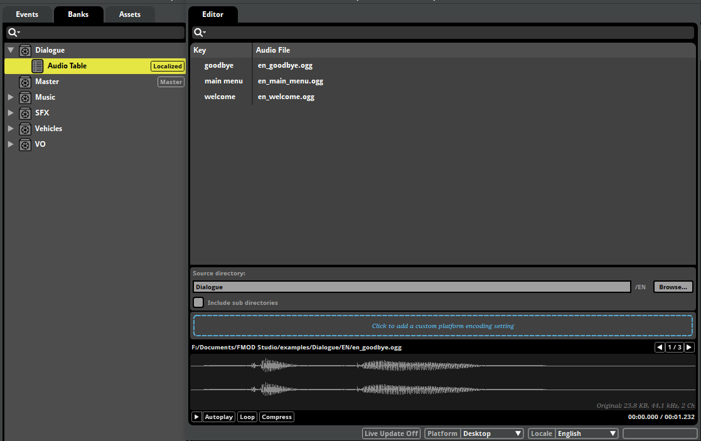
2.10.2 Loading Localized Banks
Audio tables are assigned to an associated bank, this means that in order to change the currently loaded audio table you will need to change the bank. Only one localized bank should be loaded at a time, otherwise just the first one to be loaded will be used.
You will need to define the different locale names and codes in the Localization Settings.
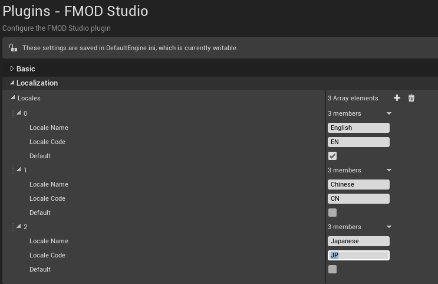
Only the locale that is selected as default will have it's bank loaded at startup, if Load All Banks has been enabled in the settings.
To change the locale, you will need to:
- unload the bank
- change the locale
- then reload the bank
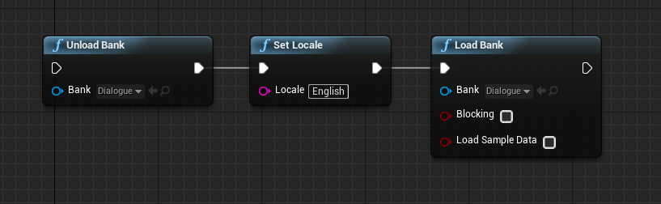
2.11 Updating/Upgrading the Integration
Start by replacing the old FMODStudio folder with the new version:
- Delete the old FMODStudio folder then follow the same steps from Installing the integration.
If you are updating to a newer minor version of FMOD no additional steps are required unless specified in the revision history.
Upgrading to a newer major version of FMOD is usually only recommend for projects at or near the beginning of development, because new major versions may introduce behavioral and breaking changes. If you are upgrading to a new major version, you will need to read over:
These will describe specific changes that might need to be made to your project.
2.11.1 Updating to UE4 4.26
When upgrading a project with FMOD integration to Unreal Engine 4.26 from an earlier version of UE4 you may encounter warnings in the log about FMOD assets failing to load. This happens because in 4.26 the FMOD integration switched from always dynamically generating Unreal assets to serializing the generated assets and loading them from disk. When an upgraded project is first opened the generated assets have not been serialized to disk so loading them fails. After closing and re-opening the upgraded project the warning messages should be gone.
2.12 Compiling the plugin (Optional)
If you want to recompile the plugin, you can drop the plugin into a code project under your game's Plugins/FMODStudio directory, then re-generate the project. This might be useful if you want to use the plugin with a different version of the engine, such as a new pre-release of Unreal. You can also do this if you want to get the plugin from github.
To recompile the plugin after downloading it from FMOD, do the following:
- Delete the
FMODStudio/Intermediatedirectory. - Delete the
FMODStudio/Binaries/Platform/Unreal*.*files. Leave the fmod libraries in the binaries directory! - Create a new code project using Unreal.
- Copy the plugin into
YourGame/Plugins/FMODStudio. - Regenerate the game's solution or xcode project.
- Build the game for "Development Editor".
- Build the game for whatever other configurations you need.
To compile the plugin after downloading the source from github, do the following
- Add FMOD dynamic libraries into the
FMODStudio/Binaries/Platform/directory. The libs can be obtained in the programmers API download or from the FMOD for Unreal download. - Create a new code project using Unreal.
- Copy the plugin into
YourGame/Plugins/FMODStudio. - Regenerate the game's solution or XCode project.
- Build the game for development editor.
- Build the game for whatever other configurations you need.
When rebuilding the plugin inside a code project, make sure you haven't also left it in the engine directory as well!
2.13 Programming Support
You are able to interface with FMOD For Unreal and/or the FMOD C++ APIs.
2.13.1 Programming with FMOD For Unreal
To reference FMOD Studio, the programmer will need to add the following to their .Build.cs file:
- Add "FMODStudio" to
PrivateDependencyModuleNames
To add some FMOD Events to a class, do the following:
- Include "FMODEvent.h" at the top of your own class
- Add a UFMODEvent * and mark with the
UPROPERTYmacro like any other field
To play the event at a location, do the following:
- Include "FMODBlueprintStatics.h" in the file you want to trigger the sound
- Call Play Event At Location with the following arguments:
- Set WorldContextObject to any UObject in the world, such as the owning actor object
- Set Event to the UFMODEvent stored in the class or passed into your function
- Set Transform to the place in the world you want to play the sound
- Set bAutoPlay to true so that it starts the sound automatically
You can also call Play Event Attached to create a new audio component attached to an actor, which will update the location automatically as the actor moves around the world.
2.13.2 Programming with the FMOD Studio C++ API
Programmers can interface with FMOD Studio directly by including "fmod_studio.hpp".
The Studio system can be obtained by GetStudioSystem. The function takes an enum because there may be a separate Studio system for auditioning in-editor and the proper system for play-in-editor. Normally, you will want to obtain the system with EFMODSystemContext.Runtime since that is the real system used in game.
if (IFMODStudioModule::IsAvailable())
{
FMOD::Studio::System* StudioSystem = IFMODStudioModule::Get().GetStudioSystem(EFMODSystemContext::Runtime);
if (StudioSystem)
{
// Use it here
}
}
You can use a mixture of FMOD Studio wrapper and FMOD Studio API functions. For example:
// Call wrapper helper function to create and start an event instance
FFMODEventInstance InstanceWrapper = UFMODBlueprintStatics::PlayEventAtLocation(ThisActor, MyEvent, FTransform(MyLocation), true);
FMOD::Studio::EventInstance* Instance = InstanceWrapper.Instance;
// Call into FMOD API directly
Instance->setVolume(0.5f);
// The instance handle will be cleaned up automatically when the sound finishes
2.13.3 Further Programming Documentation
For further documentation, see:
- Integration API Reference
- Integration Blueprint Reference
- FMOD API Reference.
2.14 Programmer Sounds
FMOD Studio events can include programmer sound modules that are controlled at runtime. There are a few different ways of hooking them up.
2.14.1 Programmer Sounds via Audio Tables
With this approach, you don't need to do any programming at all!
Choosing the audio entry to play
Create an event with a programmer sound module on it. If the module has a name, then if nothing else is assigned then that sound will be used. For example, if the sound designer sets the module name as "Welcome", then the audio table entry "Welcome" will be used by default.

To select at runtime what audio entry to use, set the programmer sound name field in the FMODAudioComponent.
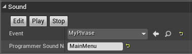
Or you can assign the name via blueprint.
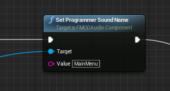
The name has to be one of the audio asset entries of a loaded audio table, or it won't find the sound to play.
Be careful to set the name before you play the audio component. If the name is assigned after the event has started, it may not play the right sound.
2.14.2 Programmer Sounds by Path
With this approach you can easily play any media file for your event, including loose files packaged with the project or found on the player's drive.
To point a programmer sound directly to a file, set the FMOD audio component's programmer sound name to the path to the .wav or .ogg file that you want to load. If this path is relative, it will be looked up relative to the content directory.
If you need to include these files in your packaged game, add the directory containing these media files to 'directories to package' in the packaging settings, otherwise it will work in the editor but not when packaged into the final game.
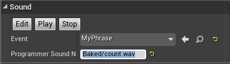
2.14.3 Programmer Sounds via API
With this approach, you will need to create an C++ class actor that can be placed in the scene to then be added as a persistent reference in the Level Blueprint. The dialogue options will then be triggered by inputs from the keyboard.
Creating the C++ Actor:
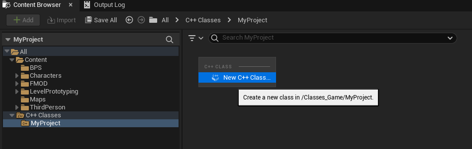
Selector Actor:
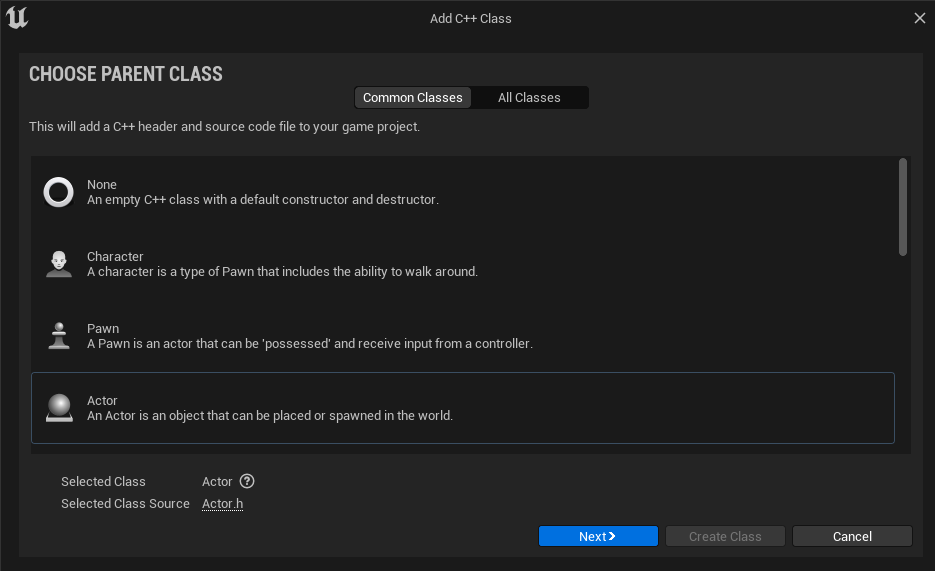
Name the Actor:
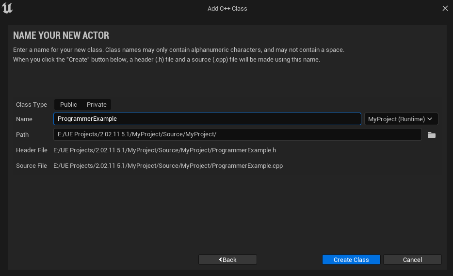
Add the Actor the level:
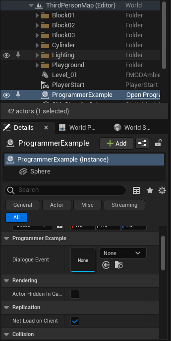
The following code will need to be added to your C++ Actor
ProgrammerExample.h
//--------------------------------------------------------------------
//
// This is an Unreal actor script that demonstrates how to use
// Programmer Sounds and an Audio Table in your game code.
//
// Programmer sounds allows the game code to receive a callback at a
// sound-designer specified time and return a sound object to be
// played within the event.
//
// The audio table is a group of audio files compressed in a Bank that
// are not associated with any event and can be accessed by a string key.
//
// Together these two features allow for an efficient implementation of
// dialogue systems where the sound designer can build a single template
// event and different dialogue sounds can be played through it at runtime.
//
// This script will play one of three pieces of dialog through an event
// on a key press from the player.
//
// This document assumes familiarity with Unreal Engine scripting. See
// https://docs.unrealengine.com/4.26/en-US/ProgrammingAndScripting/
// for resources on learning Unreal Engine scripting.
//
// For information on using FMOD example code in your own programs, visit
// https://www.fmod.com/legal
//
//--------------------------------------------------------------------
#pragma once
#include "CoreMinimal.h"
#include "GameFramework/Actor.h"
#include "fmod.hpp"
#include "FMODEvent.h"
#include <FMODAudioComponent.h>
#include "ProgrammerExample.generated.h"
struct UserData
{
FMOD::System* coreSystem = nullptr;
FMOD::Studio::System* studioSystem = nullptr;
FString key = FString();
};
/* Don't forget to change the project name to match your own */
UCLASS()
class MYPROJECT_API AProgrammerExample : public AActor
{
GENERATED_BODY()
public:
// Sets default values for this actor's properties
AProgrammerExample();
// Path of the Programmer Instrument in the FMOD Project
UPROPERTY(EditAnywhere)
UFMODEvent* dialogueEvent;
UFUNCTION(BlueprintCallable, category = "ProgrammerInstrumentFunction")
void PlayDialogue(FString key);
protected:
UserData userData = UserData();
};
ProgrammerExample.cpp
// Fill out your copyright notice in the Description page of Project Settings.
#include "ProgrammerExample.h"
FMOD_RESULT F_CALLBACK StaticDialogueEventCallback(FMOD_STUDIO_EVENT_CALLBACK_TYPE type, FMOD_STUDIO_EVENTINSTANCE* event, void* parameters);
AProgrammerExample::AProgrammerExample()
{
userData.studioSystem = IFMODStudioModule::Get().GetStudioSystem(EFMODSystemContext::Runtime);
userData.studioSystem->getCoreSystem(&userData.coreSystem);
}
void AProgrammerExample::PlayDialogue(FString key)
{
FMOD::Studio::EventDescription* dialogueDescription = IFMODStudioModule::Get().GetEventDescription(dialogueEvent, EFMODSystemContext::Runtime);
FMOD::Studio::EventInstance* dialogueInstance = nullptr;
dialogueDescription->createInstance(&dialogueInstance);
userData.key = key;
dialogueInstance->setUserData(&userData);
dialogueInstance->setCallback(StaticDialogueEventCallback, FMOD_STUDIO_EVENT_CALLBACK_CREATE_PROGRAMMER_SOUND | FMOD_STUDIO_EVENT_CALLBACK_DESTROY_PROGRAMMER_SOUND);
dialogueInstance->start();
dialogueInstance->release();
}
FMOD_RESULT F_CALLBACK StaticDialogueEventCallback(FMOD_STUDIO_EVENT_CALLBACK_TYPE type, FMOD_STUDIO_EVENTINSTANCE* event, void* parameters)
{
// Retrieving the instance
FMOD::Studio::EventInstance* instance = (FMOD::Studio::EventInstance*)event;
// Retrieve the user data from the instance
UserData* context = nullptr;
instance->getUserData((void**)&context);
// Switch on the current type of the callback
switch (type)
{
case FMOD_STUDIO_EVENT_CALLBACK_CREATE_PROGRAMMER_SOUND:
{
FMOD_MODE soundMode = FMOD_LOOP_NORMAL | FMOD_CREATECOMPRESSEDSAMPLE | FMOD_NONBLOCKING;
FMOD_STUDIO_PROGRAMMER_SOUND_PROPERTIES* props = (FMOD_STUDIO_PROGRAMMER_SOUND_PROPERTIES*)parameters;
// Changing key from FString to const char*
const char* charKey = TCHAR_TO_ANSI(*context->key);
FMOD_STUDIO_SOUND_INFO info;
FMOD_RESULT result = context->studioSystem->getSoundInfo(charKey, &info);
if (result != FMOD_OK)
{
break;
}
FMOD::Sound* sound = nullptr;
result = context->coreSystem->createSound(info.name_or_data, soundMode, &info.exinfo, &sound);
if (result == FMOD_OK)
{
props->sound = (FMOD_SOUND*)sound;
props->subsoundIndex = info.subsoundindex;
}
break;
}
case FMOD_STUDIO_EVENT_CALLBACK_DESTROY_PROGRAMMER_SOUND:
{
FMOD_STUDIO_PROGRAMMER_SOUND_PROPERTIES* props = (FMOD_STUDIO_PROGRAMMER_SOUND_PROPERTIES*)parameters;
FMOD::Sound* sound = (FMOD::Sound*)props->sound;
sound->release();
}
}
return FMOD_OK;
}
Following that, drag and drop the Actor into the Level Blueprint so that it can be triggered:
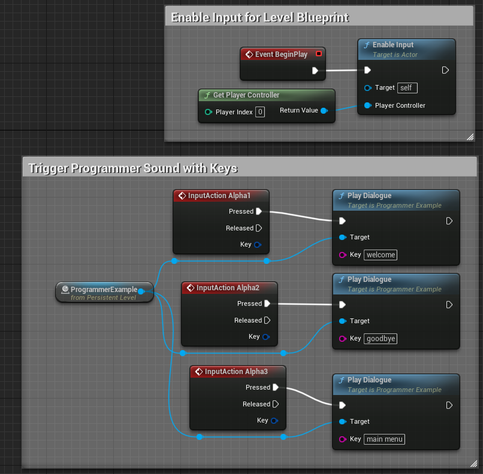
2.14.4 Troubleshooting
Also, when setting the name to an audio table entry, you will need to make sure the audio table bank is already loaded before the event starts.
The FMOD audio component only supports a single programmer sound per event. If you want to have an event that has multiple programmer sounds, each one playing a different sound, then you'll need to create the event directly via the FMOD API and provide your own callback. You can look at how the FMOD audio component programmer sound callback works and use that as a base for your own class.
2.15 Deployment
These steps describe how to prepare your project for deployment. This is relevant to both the Launch option as well as the "File > Package Project" menu item.
If any platforms require specific steps, they can be found in Platform Specifics.
2.15.1 Packaging banks
The directory containing the built FMOD banks should be added to the "Additional Non-Asset Directories To Copy" list, and directories containing generated assets should be added to the "Additional Non-Asset Directories To Cook" list. You will be prompted to do this in the FMOD Studio settings pane of Unreal project settings ("Edit > Project Settings > FMOD Studio"):
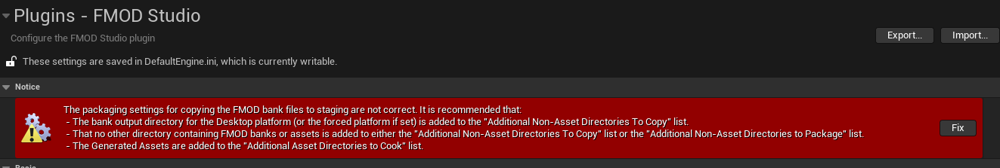
This can also be done manually by selecting the "Edit > Project Settings..." menu item and navigating to the Packaging section from the left hand pane, under the Project heading and adding the bank output directory to the "Additional Non-Asset Directories To Copy" list.
Generated assests can be manually added to the "Additional Non-Asset Directories To Cook" list in the same way.
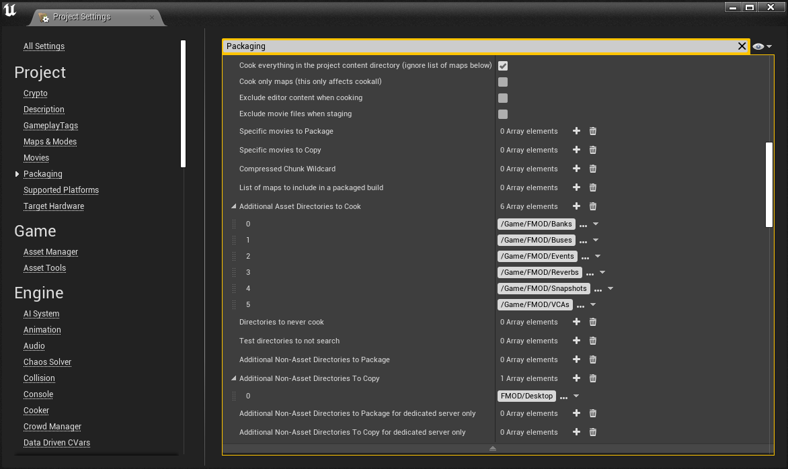
When the bank output directory is added to the "Additional Non-Asset Directories To Copy" list the banks will be copied as loose files when packaging your project. This is the recommended approach. It is possible to have the banks added to Unreal's .PAK file by adding the bank output directory to the "Additional Non-Asset Directories to Package" list, but we no longer recommend this approach because adding the banks to the .PAK file can lead to the packaged project deadlocking in the filesystem.
When directories are included in the "Additional Non-Asset Directories To Cook" list Unreal's default cooking behaviour, cooking all maps during packaging, will no longer occur. If you want to re-enable this behaviour you can tick "Cook everything in the project content directory (ignore list of maps below)".
2.15.2 Mutli-platform builds
By default the directory containing banks for the "Desktop" platform is added to the "Additional Non-Asset Directories To Copy" list and the banks for the Desktop platform are the ones which will be available at runtime. This is usually correct for the Windows, Mac and Linux platforms.
For other platforms the relevant PlatformGame.ini file can be edited so the correct platform-specific banks are copied instead. See Platform Specifics for details.
If you only have the Desktop banks and want to run on another platform, you can set Force Platform Name in the FMOD advanced settings to Desktop.
2.15.3 Bank Files Inside Content Directory
The above directory name is relative to your Content directory. It is highly recommended that banks be placed within the content directory, as paths outside this directory will not deploy correctly to all platforms. For example:
- Mac doesn't allow support directories outside the content directory at all.
- Windows and Android have issues looking up directories outside the Content directory when used with packages.
This doesn't mean you need to put your whole Studio project inside the content directory. You can customize Studio by editing the Preferences and choosing a directory to export banks to, as described in the Working with Banks page.
The integration will load the platform bank files automatically. On PC it will load from FMOD/Desktop but on Android and IOS it will look for banks under FMOD/Mobile.
If you use FMOD as the directory to deploy and have multiple platform banks exported, then they will all be packaged up. To slim down your final package size, you may need to tweak the additional directories setting on a per platform basis. That way you only package FMOD/Mobile for Android, FMOD/Desktop for PC, FMOD/PS4 for PS4, etc.
2.15.4 Deploying FMOD audio plugins
You will need to make sure the plugins are deployed as well. Unreal deployment doesn't have access to the settings information so you will need to create an extra file that lists the plugins you want to deploy.
Create a file "plugins.txt" in the FMODStudio/Binaries/Platform/ directory. The text file should contain the plugin names (just the name without file extension).
For example, to deploy fmod_gain.dll on Win64 builds, create a file FMODStudio/Binaries/Win64/plugins.txt with the following contents:
fmod_gain
2.15.5 Loading blueprints before plugin load
One issue to be aware of is where blueprints are serialized from disk too early, before any plugins are loaded. This can occur from the following code, which is included by default in example C++ projects constructor:
static ConstructorHelpers::FClassFinder<APawn> PlayerPawnClassFinder(TEXT("/Game/FirstPersonCPP/Blueprints/FirstPersonCharacter"));
The finder will serialize the first person character blueprint, but any FMOD references will fail to load since the FMOD plugin has not been created yet. To make sure that the FMOD plugin is loaded first, add the line of code above the class finder.
IFMODStudioModule::Get();
2.15.6 Disabling Unreal Audio Device
By default FMOD Studio works side-by-side with the inbuilt Unreal audio device on the following platforms:
- Windows Desktop
- Universal Windows Platform
- Linux
- MacOS
- Android
- PS4
- Switch
Any of the platforms listed below will not work with the inbuilt Unreal audio:
- iOS / tvOS - Both Unreal and FMOD require exclusive control of the AudioSession to correctly handle interruptions.
- Xbox One / Xbox Series X|S - Both Unreal and FMOD will attempt to consume all of the available XMA resources, this will cause the second system to fail initialization.
- PS5 - Both Unreal and FMOD require system resources that can only be claimed once for the application.
To disable the Unreal audio while leaving the FMOD Studio audio, the standard Unreal ini file setting can be used.
For each required platform, add a new file /Config/{Platform}/{Platform}Engine.ini with this section:
[Audio]
AudioDeviceModuleName=
AudioMixerModuleName=
The audio device can be disabled for every platform that you want to ship with.
2.16 Source Control
Not all of the plugin files are required to be checked in to source control, below the necessary files are marked:
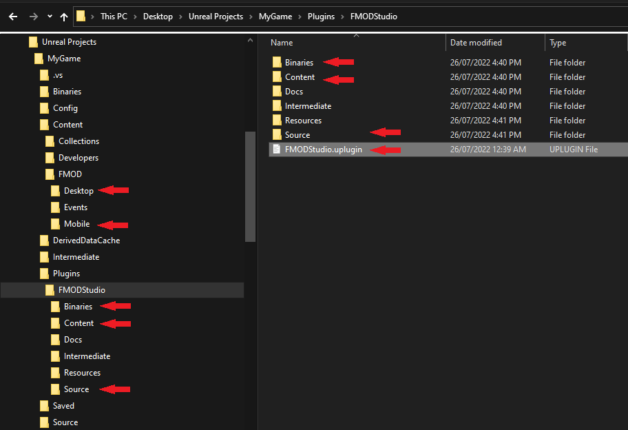
FMOD Banks cannot be added using the In-Editor source control, as the editor only interacts with UAssets, they need to be added to source control from outside of the UE Editor.
Other files/folders are optional and will depend on your teams setup.
2.16.1 Generated Assets
From UE4.26 onwards, generated assets in the plugin will be serialized to disk. These files can be generated in two ways:
-
Unreal Editor: By opening the Unreal Editor, the FMOD plugin will automatically load the FMOD Studio bank files and generate assets on disk.
-
Commandlet: This can be used from commandline to generate assets on disk without opening the Unreal Editor.
Excluding Generated files from Source Control
The recommended way of dealing with generated assets is to exclude all generated assets from source control. This can help prevent source control locking/conflicts as the assets are generated locally when the editor is opened.
If you employ an automated build process that pulls directly from source control without running the Unreal Editor, the generated assets will need to be built explicitly as part of your build process. This can be done with the provided Commandlet.
Adding Generated files to Source Control
While not recommended, it is possible to add the generated assets to source control. This can simplify your automated build process (no need to run the Commandlet) at the cost of complicating your source control workflow (possible locking/conflict issues).
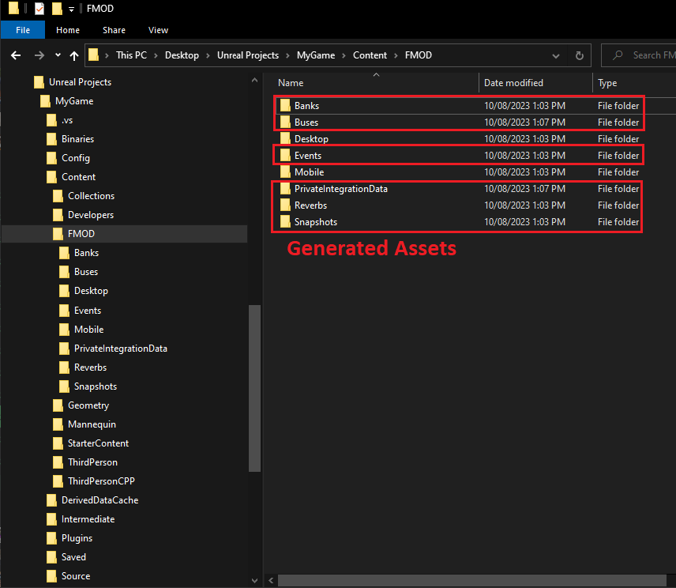
When updating the banks, make sure to update the generated assets at the same time. This is to avoid conflicting checkouts with the Unreal Editor source control plugin.
2.17 Commandlet
From UE4.26 onwards, FMOD for Unreal now provides a Commandlet for generating the serialized UAssets without having to open the Editor.
{editor-executable} {ProjectPath.uproject} -run=FMODGenerateAssets [-rebuild]
- editor-executable: When using Unreal Engine 4, this will be
UE4Editor-cmd.exe. When using Unreal Engine 5, this will beUnrealEditor-cmd.exe. - rebuild: (Optional) Remove all current generated assets before building.
This can be especially useful for build machines that don't normally run the Editor at all, which is what normally triggers the assets to be built, and does not require the generated assets to be checked in to source control.